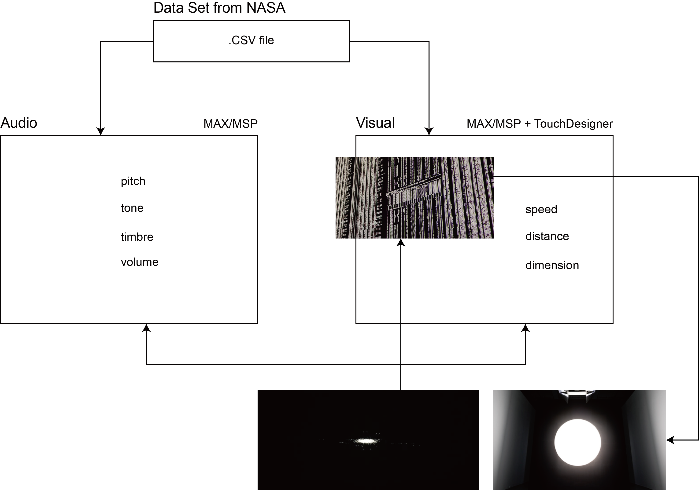

1. Inspiration & Significance
In 2019, I did a realtime VJ performance with a MIDI synthesizer and MAX/MSP. Now I would like to re-grasp some of the technique that I was used to work with. I would like to start from the artist that inspired me during that time, Ryoji Ikeda, and his work Code-Verse
Code-Verse revealed the conplexity of the meta-cosmo filled with tons of information that can be barely recognized by people before it vanishes. Showing respect to the artist and adding some of my personal thoughts onto the original work, I would like to introduce a set of data into the audio-visual performance. The complicated cosmo reminds me of the enormity of the universe. There is too much information gathering in a limited space, which can also be viewed as a tiny little unit.
We're just mayflies amid the universe or an insignificant grain of millet in the boundless sea
2. Diagram:
